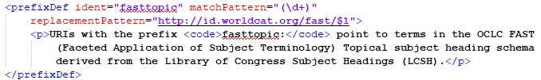

Keywords
Working with indexing in TEI
Understanding keywords
Every TEI file in this collection includes keywords in the TEI header. (These are not present in the plain-text releases.) Keywords are metadata. They are words about the content of the entry, rather than part of the content. Sometimes, keywords are called "index" or "subject" terms.
Each keyword is extracted from the content and is intended to represent a key or central concept of the entry. They can be used in searches to quickly identify related entries by looking for those with similar keywords, instead of searching the complete text for all uses of the term throughout the Encyclopedia.
The process by which these keywords were generated is explained in the Production section of this document. Here you will find an explanation of how keywords are encoded in TEI, how they can be ranked by importance, and how they can connect entries to the semantic web.
Encoding of keywords.
All metadata for
each entry is stored in TEI within the <profileDesc> tag of the
TEI header.
In the example, the <keywords> element contains a list
of <term> elements. Each <term> contains a
single keyword as its text value. You will notice that there are three
<keywords> elements, rather than one, and that each has a
different list of terms. This is because we used three different controlled vocabularies
to analyze the entry content. Each <keywords> represents the
results from one of these vocabularies.
The first two are from the OCLC's FAST instantiation of the LCSH. It contains the complete vocabulary of the LCSH divided into facets, or
subsections, of related terms. Each <term> encloses an
@ref showing which facet it references, the FAST Topical vocabulary, or
FAST Geographical. Thus, the keyword "Poland" is from the latter. The
@scheme attribute of the <keywords> element
contains a URI that takes you to a descriptive webpage for the vocabulary. Since both of
the first two are from FAST, they reference the same description.
The third vocabulary is the 1910 edition of the LCSH; this is the earliest edition published, and we selected it because of its historical value as the vocabulary closest in time to the historical encyclopedias themselves. Testing early in the project demonstrated better results because of its reliance on often archaic terms that were also present in the data set. These results are often similar to those of FAST Topical, as in the example, but the can show variations that can help guide interpretation. In the example, the keywords "Physicians" and "Physics" are the two most highly-ranked terms for both FAST Topical and the 1910 LCSH, but the older vocabulary adds "Manners" to its top-ranked list, a term absent in the newer FAST keywords. The older vocabulary also omits both "French" and "Arts" from its list. Even when the two lists are the same, the 100-year gap between the two vocabularies should be kept in mind, since even the same keyword can have different meanings in each due to language change.
Ranking keywords
Each keyword term
includes a value for the number of times the word occurs in the text. If you see
@n="1", this means the algorithm recorded one usage of the keyword, so
higher values reflect an increased usage—and presumably significance—of the term. Use
this metric with caution. Not all word usages are counted as significant, so not every
word is counted. Furthermore, the number of usages is relative to the size of the entry.
In a small entry, words appearing twice can be significant. But in a longer entry,
values in the hundreds are common.
Linking to the semantic web
The semantic web is a concept of the world wide web constructed with machine-readable data that can better connect web users to specific concepts and dates. Keywords allow each entry in the data set to link out to the named authority files for the terms. This open linking makes the files easier for search engines to inspect, thus increasing their accessibility for users searching those same terms. Thus each entry contains linked data connecting it to the semantic web. How does this connection work?
@ref includes an abbreviation of the
controlled vocabulary name and an alphanumeric sequence. The abbreviation is a prefix
for the stable portion of a URI referencing the vocabulary's named authority files. It
ends with a colon and is followed by the vocabulary's "Record ID," a unique identifier
for that specific term. Combining the full URI with the ID takes you directly to the
online named authority file for that term. http://id.worldcat.org/fast/. By appending the record ID for
"Physicians" to it, 1062841, we get the address of the named authority
file for "Physicians": http://id.worldcat.org/fast/1062841.When the TEI is transformed to HTML or another format, the conversion process expands the abbreviated prefix
into its full URI and joins it to the ID seamlessly. TEI was designed with this system
of using prefixes instead of repeating the full URI for every keyword term. For all
entries, <teiHeader> includes a definition of the abbreviated
prefix that supplies its full value:
<prefixDef> section of the TEI
header.
The XSL transform script substitutes the replacement pattern value for the
prefix fasttopic. The replacement pattern is a regular expression that substitutes the record ID for $1, and
thus generates the complete URL for the named authority file.